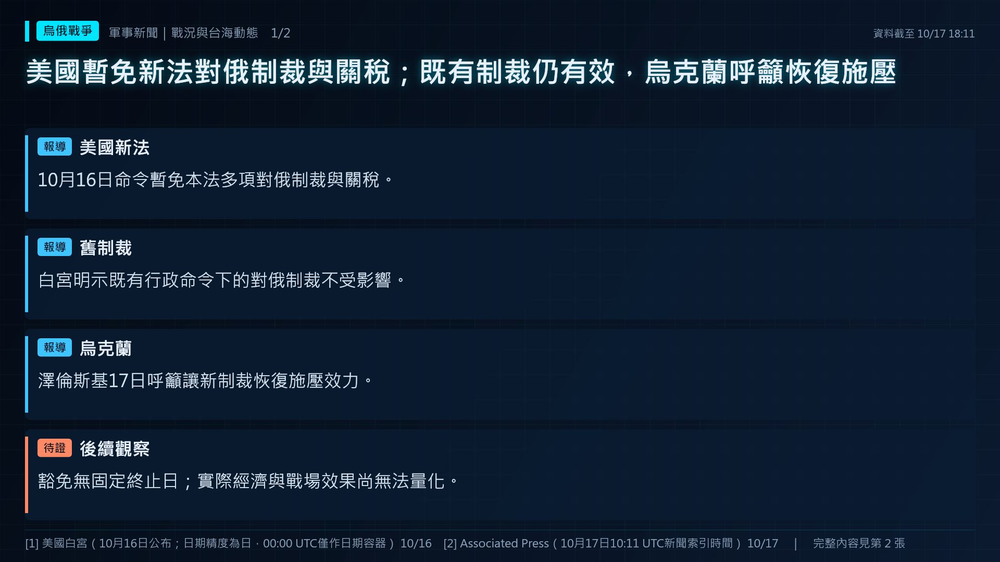
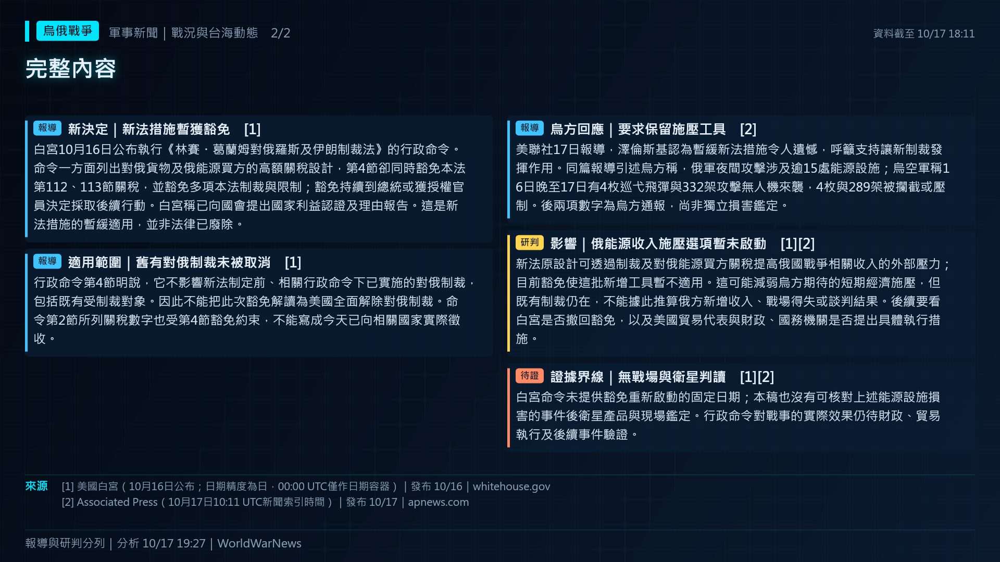
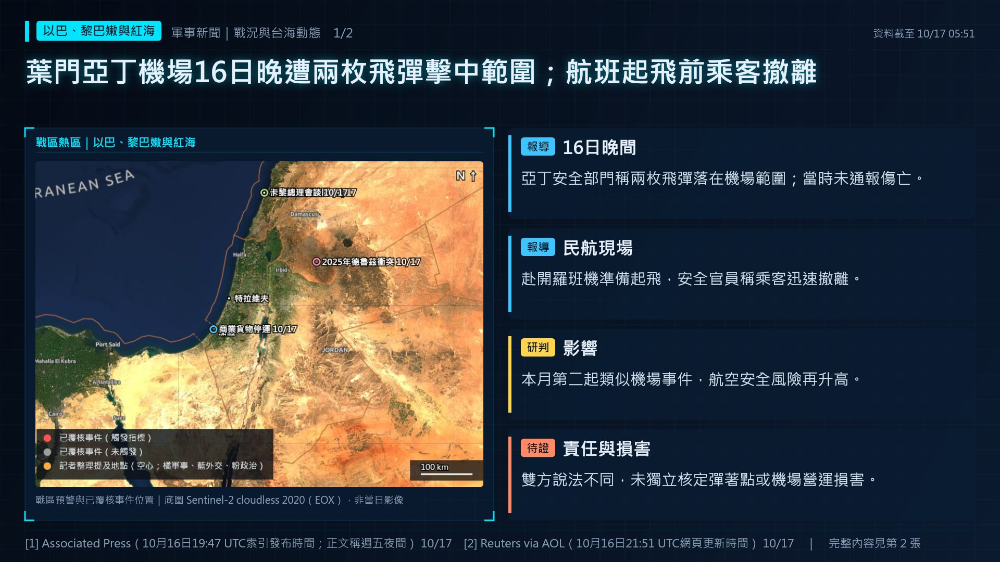
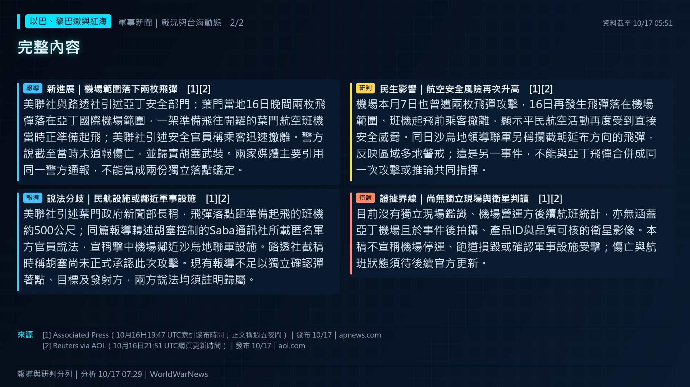
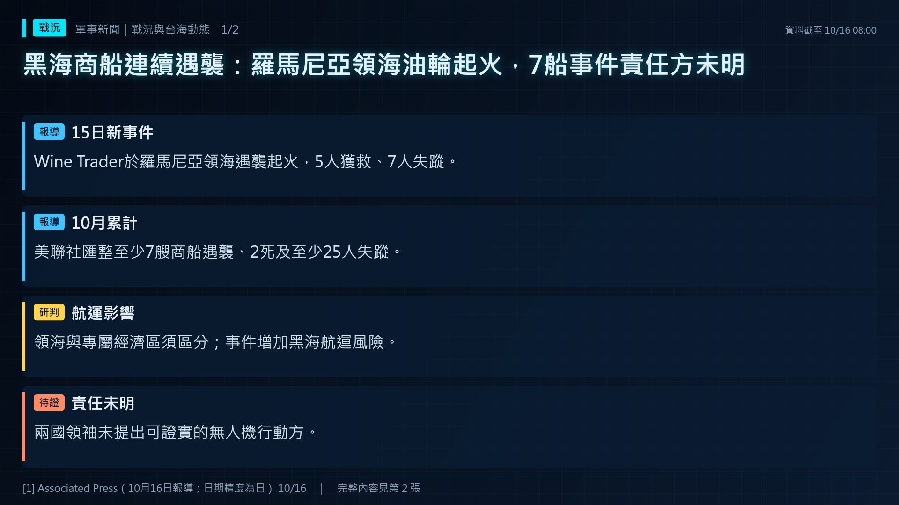
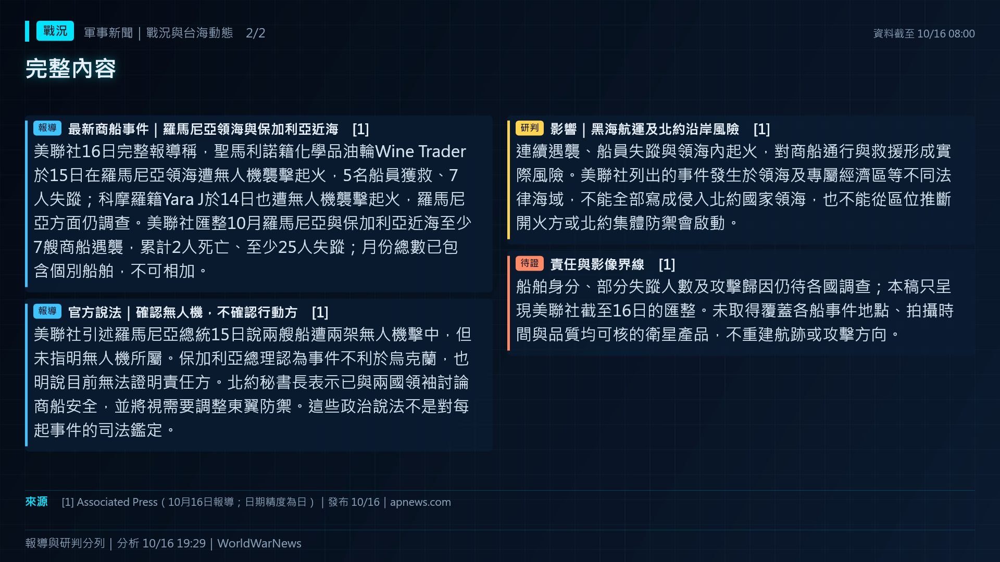
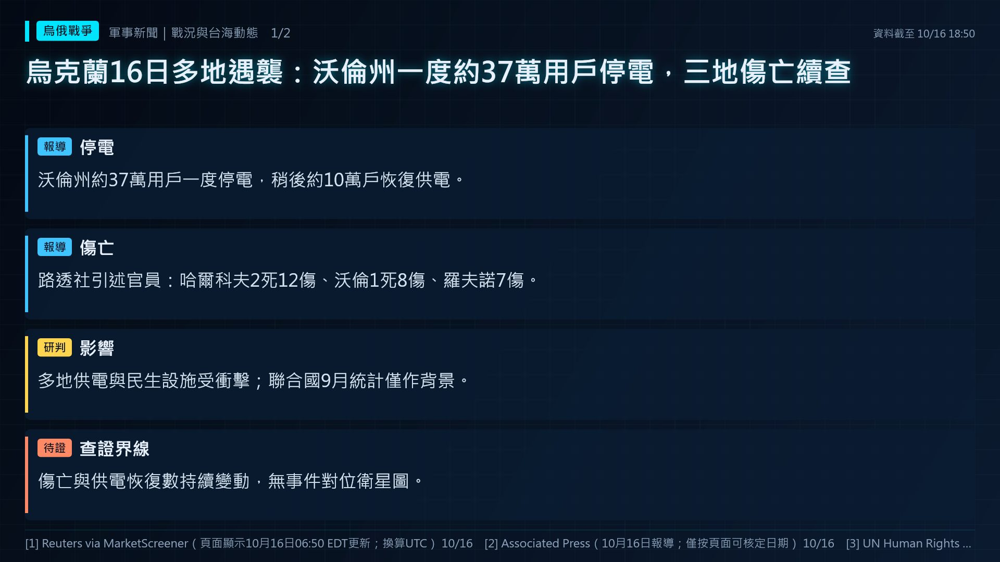
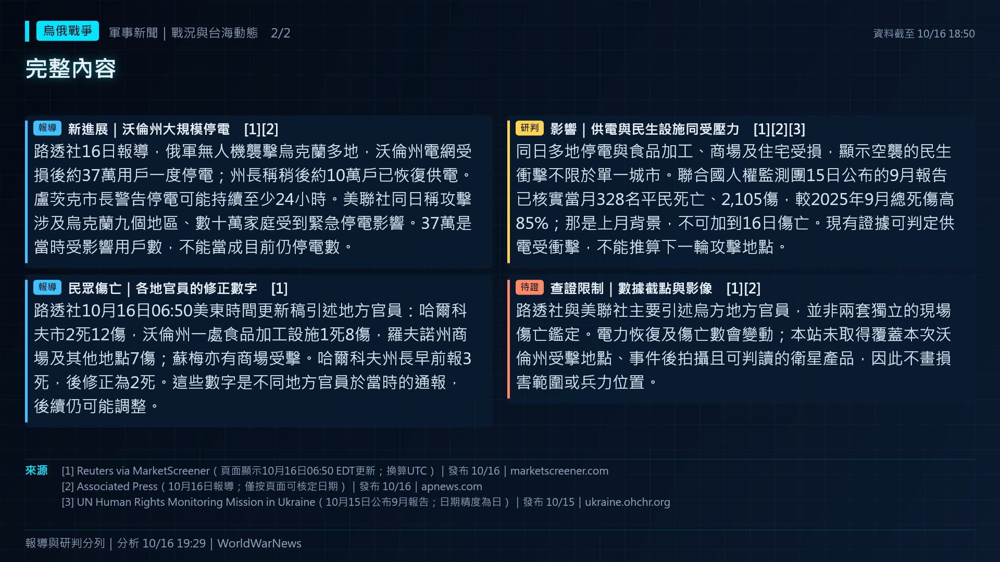

燈號上升
本站預警燈號升級。
報導標題：由第 2 級升至第 3 級「高度警戒」
公開來源整理｜最後更新 2026-10-17 20:40（台北）｜每天早晚更新，出事時加開
📌 10/17（六）每日摘要｜台海 2 級升溫：中國海警進入金門、馬祖限制水域或登檢台灣船隻｜美伊 2 級升溫：UKMTO 波灣／荷莫茲／阿曼灣船舶遇襲｜歐洲北約 3 級高度警戒：波蘭／羅馬尼亞／波羅的海國家領空遭侵犯｜烏俄 3 級高度警戒：俄軍飛彈與無人機 7 日平均｜朝鮮半島 2 級升溫：北韓彈道飛彈發射｜南海 2 級升溫：中菲海上衝突｜以巴紅海 3 級高度警戒：胡塞攻擊紅海／亞丁灣船隻。降溫訊號：台海、美伊、歐洲北約、烏俄。市場無異常波動。
🕊️ 有降溫訊號（見原因與來源）
0 項主要、5 項次要指標觸發
下一個觀察點：國防部每日通報；10 月 10 日國慶前後共軍是否發布演習或聯合戰備警巡。
1 項主要、0 項次要指標觸發
1 項主要、0 項次要指標觸發
🕊️ 有降溫訊號（見原因與來源）
1 項主要、0 項次要指標觸發
下一個觀察點：美伊透過調停方會談的結果；UKMTO 荷莫茲新通報（已自動抓取）。
2 項獨立主要指標觸發，且有官方或獨立來源
🕊️ 有降溫訊號（見原因與來源）
2 項獨立主要指標觸發，且有官方或獨立來源
下一個觀察點：波蘭新交戰規則實施後的首次攔截；北約是否召開第 4 條諮商。
🕊️ 有降溫訊號（見原因與來源）
48 小時內曾達較高等級，暫不降級
下一個觀察點：烏克蘭空軍每日通報的無人機與飛彈數是否突破 60 日 P95；大規模飛彈夜襲。
等級依公開資料與固定規則計算（試行中），不是開戰機率。「無法判定」表示資料不足，不代表平靜。
近 7 天經 2 家以上媒體確認的事件，依類別分欄。
本站預警燈號升級。
報導標題：由第 2 級升至第 3 級「高度警戒」
紅海與亞丁灣航運受威脅，會推高歐亞運費、保費與油價。
報導標題：Oil Prices Rebound After Houthis Say They Attacked Saudi Tanker 來源 ↗
北韓以試射展示打擊能力，常與美韓演習或政治時間點相關；日本、南韓會同步發布警報與軌跡。
報導標題：South Korea, Japan detect multiple North Korean ballistic missile launches 來源 ↗
北約國家為因應俄國攻擊而緊急升空或關閉機場，代表前線緊張升高。
報導標題：Record Israeli attacks on Palestinian olive groves; Teen shooter kills children at Oregon school; Poland scrambles jets 來源 ↗
打擊黎巴嫩、敘利亞、伊拉克或葉門目標，衝突有擴大到多國的風險。
報導標題：US-Israel-Iran War Latest Live News: Yemen Launches Air Strikes on Houthi Positions West of Taiz, Nine Attacks Reported 來源 ↗
俄國無人機或飛彈越界進入北約國家，北約需判斷是否回應。
報導標題：Moldova records fresh Russian drone incursions into its airspace 來源 ↗
新一輪制裁或出口管制，反映外交施壓升級。
報導標題：Trump puts new Russia sanctions passed by Congress on hold, saying waiver is in US national interest 來源 ↗
衝突雙方通話、會談或停火協商，可能讓緊張暫緩（不會降低燈號）。
報導標題：From hospital, pope pushes Putin for ceasefire in contested Ukraine city 來源 ↗
衝突雙方通話、會談或停火協商，可能讓緊張暫緩（不會降低燈號）。
報導標題：Amid TSMC-Terafab Talks, Taiwan Said To Be Mulling Greater Curbs On AI Chip Sales To China 來源 ↗
衝突雙方通話、會談或停火協商，可能讓緊張暫緩（不會降低燈號）。
報導標題：Video. EU summit: Sanctions to stay until Russia ends war, von der Leyen says 來源 ↗
國台辦、商務部等宣布制裁、關稅、禁令或懲戒名單，屬經濟與政治施壓。
報導標題：In A First, China Sanctions Ministers of Diplomatic Allies of Taiwan 來源 ↗
國台辦、商務部等宣布制裁、關稅、禁令或懲戒名單，屬經濟與政治施壓。
報導標題：China sanctions company owned by Taiwanese lawmaker's father 來源 ↗
歐洲各國增加國防預算、恢復徵兵或發放民防手冊，反映對俄威脅的評估升高。
報導標題：Europe faces fiscal trade-offs as defense spending pressures build 來源 ↗
宣布緊急狀態、戒嚴或斷網，常見於戰爭前後或重大動盪時。
報導標題：Israel extends home front state of emergency until November 3 來源 ↗
以新聞標題中最先出現的國家作為行動方，列出近 7 天的動作。
國台辦、商務部等宣布制裁、關稅、禁令或懲戒名單，屬經濟與政治施壓。
報導標題：In A First, China Sanctions Ministers of Diplomatic Allies of Taiwan 來源 ↗
晶片、稀土等關鍵材料的出口管制，牽動台灣半導體供應鏈。
報導標題：International News: China proposes export restrictions on AI, Chip and Solar technologies 來源 ↗
另有 14 則，見時間軸
新一輪制裁或出口管制，反映外交施壓升級。
報導標題：Trump puts new Russia sanctions passed by Congress on hold, saying waiver is in US national interest 來源 ↗
打擊黎巴嫩、敘利亞、伊拉克或葉門目標，衝突有擴大到多國的風險。
報導標題：US-Israel-Iran War Latest Live News: Yemen Launches Air Strikes on Houthi Positions West of Taiz, Nine Attacks Reported 來源 ↗
晶片、稀土等關鍵材料的出口管制，牽動台灣半導體供應鏈。
報導標題：ByteDance ASIC Deal: Nvidia Funds Chips US Export Controls Meant to Block 來源 ↗
另有 15 則，見時間軸
衝突雙方通話、會談或停火協商，可能讓緊張暫緩（不會降低燈號）。
報導標題：From hospital, pope pushes Putin for ceasefire in contested Ukraine city 來源 ↗
俄國無人機或飛彈越界進入北約國家，北約需判斷是否回應。
報導標題：Moldova records fresh Russian drone incursions into its airspace 來源 ↗
召集後備、延長役期或修改動員法，是開戰前最明確的準備動作之一。
報導標題：Russia plans to deploy conscripts to fight fires in combat zones 來源 ↗
另有 3 則，見時間軸
衝突雙方通話、會談或停火協商，可能讓緊張暫緩（不會降低燈號）。
報導標題：Ukraine Strikes Russian Refinery After Moscow Breaks Trump’s Energy Ceasefire 來源 ↗
衝突雙方通話、會談或停火協商，可能讓緊張暫緩（不會降低燈號）。
報導標題：Ukraine resumes Russian refinery strikes; U.S. sends troops to Latin America; EU-Gulf summit postponed amid Saudi airpor 來源 ↗
北約國家為因應俄國攻擊而緊急升空或關閉機場，代表前線緊張升高。
報導標題：Romania scrambled aircraft due to aerial targets near the border with Ukraine 來源 ↗
另有 5 則，見時間軸
北韓以試射展示打擊能力，常與美韓演習或政治時間點相關；日本、南韓會同步發布警報與軌跡。
報導標題：North Korea holds first underwater-launched missile tests in nearly 3 years 來源 ↗
北韓以試射展示打擊能力，常與美韓演習或政治時間點相關；日本、南韓會同步發布警報與軌跡。
報導標題：DPRK Confirms Test-Firing of Tactical Ballistic Missile 來源 ↗
北韓以試射展示打擊能力，常與美韓演習或政治時間點相關；日本、南韓會同步發布警報與軌跡。
報導標題：North Korea fired multiple ballistic missiles toward its east coast on Monday, October 12, marking its fourth launch in 來源 ↗
另有 2 則，見時間軸
北韓以試射展示打擊能力，常與美韓演習或政治時間點相關；日本、南韓會同步發布警報與軌跡。
報導標題：South Korea, Japan detect multiple North Korean ballistic missile launches 來源 ↗
北約國家為因應俄國攻擊而緊急升空或關閉機場，代表前線緊張升高。
報導標題：Record Israeli attacks on Palestinian olive groves; Teen shooter kills children at Oregon school; Poland scrambles jets 來源 ↗
打擊黎巴嫩、敘利亞、伊拉克或葉門目標，衝突有擴大到多國的風險。
報導標題：Two Wounded, Including Four-Year-Old Child, In Israeli Airstrike on South Lebanon 來源 ↗
宣布緊急狀態、戒嚴或斷網，常見於戰爭前後或重大動盪時。
報導標題：Israel extends home front state of emergency until November 3 來源 ↗
召集後備、延長役期或修改動員法，是開戰前最明確的準備動作之一。
報導標題：Jewish Israelis: Next Gov't Should Take on Haredi Conscription; State Commission of Inquiry 來源 ↗
另有 6 則，見時間軸
衝突雙方通話、會談或停火協商，可能讓緊張暫緩（不會降低燈號）。
報導標題：Video. EU summit: Sanctions to stay until Russia ends war, von der Leyen says 來源 ↗
北約國家為因應俄國攻擊而緊急升空或關閉機場，代表前線緊張升高。
報導標題：Poland scrambled fighter jets in response to Russia's attack on Ukraine 來源 ↗
新一輪制裁或出口管制，反映外交施壓升級。
報導標題：EU imposes sanctions on 12 individuals and companies for aiding Russia 來源 ↗
另有 10 則，見時間軸
🕊️ 10/16 3 家媒體報導降溫訊號（通話、會談、停火）：Amid TSMC-Terafab Talks, Taiwan Said To Be Mulling G
無異常（4/4 項有資料）
無異常（1/1 項有資料）
無異常（2/2 項有資料）
無異常（5/5 項有資料）
🕊️ 10/16 5 家媒體報導降溫訊號（通話、會談、停火）：據報以總理與美國務卿通話 商討恢復打擊伊朗
無異常（3/3 項有資料）
無異常（5/6 項有資料）
🕊️ 10/17 4 家媒體報導降溫訊號（通話、會談、停火）：Ukraine president targets Trump, Putin at EU summit
無異常（1/1 項有資料）
🕊️ 10/17 31 家媒體報導降溫訊號（通話、會談、停火）：From hospital, pope pushes Putin for ceasefire in c
無異常（1/1 項有資料）
依據：The Korea Times（Yonhap）、The Korea Times、NK News、NK News｜本站自行整理，非全文翻譯
依據：Philippine Information Agency（轉PCG）、The Philippine Star｜本站自行整理，非全文翻譯
依據：CTP-ISW｜本站自行整理，非全文翻譯
依據：CTP-ISW｜本站自行整理，非全文翻譯
依據：ISW／Critical Threats｜本站自行整理，非全文翻譯
依據：ISW／Critical Threats、Vesti｜本站自行整理，非全文翻譯


白宮10月16日公布執行《林賽・葛蘭姆對俄羅斯及伊朗制裁法》的行政命令。命令一方面列出對俄貨物及俄能源買方的高額關稅設計，第4節卻同時豁免本法第112、113節關稅，並豁免多項本法制裁與限制；豁免持續到總統或獲授權官員決定採取後續行動。白宮稱已向國會提出國家利益認證及理由報告。這是新法措施的暫緩適用，並非法律已廢除。
行政命令第4節明說，它不影響新法制定前、相關行政命令下已實施的對俄制裁，包括既有受制裁對象。因此不能把此次豁免解讀為美國全面解除對俄制裁。命令第2節所列關稅數字也受第4節豁免約束，不能寫成今天已向相關國家實際徵收。
美聯社17日報導，澤倫斯基認為暫緩新法措施令人遺憾，呼籲支持讓新制裁發揮作用。同篇報導引述烏方稱，俄軍夜間攻擊涉及逾15處能源設施；烏空軍稱16日晚至17日有4枚巡弋飛彈與332架攻擊無人機來襲，4枚與289架被攔截或壓制。後兩項數字為烏方通報，尚非獨立損害鑑定。
新法原設計可透過制裁及對俄能源買方關稅提高俄國戰爭相關收入的外部壓力；目前豁免使這批新增工具暫不適用。這可能減弱烏方期待的短期經濟施壓，但既有制裁仍在，不能據此推算俄方新增收入、戰場得失或談判結果。後續要看白宮是否撤回豁免，以及美國貿易代表與財政、國務機關是否提出具體執行措施。
白宮命令未提供豁免重新啟動的固定日期；本稿也沒有可核對上述能源設施損害的事件後衛星產品與現場鑑定。行政命令對戰事的實際效果仍待財政、貿易執行及後續事件驗證。


美聯社與路透社引述亞丁安全部門：葉門當地16日晚間兩枚飛彈落在亞丁國際機場範圍，一架準備飛往開羅的葉門航空班機當時正準備起飛；美聯社引述安全官員稱乘客迅速撤離。警方說截至當時未通報傷亡，並歸責胡塞武裝。兩家媒體主要引用同一警方通報，不能當成兩份獨立落點鑑定。
美聯社引述葉門政府新聞部長稱，飛彈落點距準備起飛的班機約500公尺；同篇報導轉述胡塞控制的Saba通訊社所載匿名軍方官員說法，宣稱擊中機場鄰近沙烏地聯軍設施。路透社截稿時稱胡塞尚未正式承認此次攻擊。現有報導不足以獨立確認彈著點、目標及發射方，兩方說法均須註明歸屬。
機場本月7日也曾遭兩枚飛彈攻擊，16日再發生飛彈落在機場範圍、班機起飛前乘客撤離，顯示平民航空活動再度受到直接安全威脅。同日沙烏地領導聯軍另稱攔截朝延布方向的飛彈，反映區域多地警戒；這是另一事件，不能與亞丁飛彈合併成同一次攻擊或推論共同指揮。
目前沒有獨立現場鑑識、機場營運方後續航班統計，亦無涵蓋亞丁機場且於事件後拍攝、產品ID與品質可核的衛星影像。本稿不宣稱機場停運、跑道損毀或確認軍事設施受擊；傷亡與航班狀態須待後續官方更新。


美聯社16日完整報導稱，聖馬利諾籍化學品油輪Wine Trader於15日在羅馬尼亞領海遭無人機襲擊起火，5名船員獲救、7人失蹤；科摩羅籍Yara J於14日也遭無人機襲擊起火，羅馬尼亞方面仍調查。美聯社匯整10月羅馬尼亞與保加利亞近海至少7艘商船遇襲，累計2人死亡、至少25人失蹤；月份總數已包含個別船舶，不可相加。
美聯社引述羅馬尼亞總統15日說兩艘船遭兩架無人機擊中，但未指明無人機所屬。保加利亞總理認為事件不利於烏克蘭，也明說目前無法證明責任方。北約秘書長表示已與兩國領袖討論商船安全，並將視需要調整東翼防禦。這些政治說法不是對每起事件的司法鑑定。
連續遇襲、船員失蹤與領海內起火，對商船通行與救援形成實際風險。美聯社列出的事件發生於領海及專屬經濟區等不同法律海域，不能全部寫成侵入北約國家領海，也不能從區位推斷開火方或北約集體防禦會啟動。
船舶身分、部分失蹤人數及攻擊歸因仍待各國調查；本稿只呈現美聯社截至16日的匯整。未取得覆蓋各船事件地點、拍攝時間與品質均可核的衛星產品，不重建航跡或攻擊方向。


路透社16日報導，俄軍無人機襲擊烏克蘭多地，沃倫州電網受損後約37萬用戶一度停電；州長稱稍後約10萬戶已恢復供電。盧茨克市長警告停電可能持續至少24小時。美聯社同日稱攻擊涉及烏克蘭九個地區、數十萬家庭受到緊急停電影響。37萬是當時受影響用戶數，不能當成目前仍停電數。
路透社10月16日06:50美東時間更新稿引述地方官員：哈爾科夫市2死12傷，沃倫州一處食品加工設施1死8傷，羅夫諾州商場及其他地點7傷；蘇梅亦有商場受擊。哈爾科夫州長早前報3死，後修正為2死。這些數字是不同地方官員於當時的通報，後續仍可能調整。
同日多地停電與食品加工、商場及住宅受損，顯示空襲的民生衝擊不限於單一城市。聯合國人權監測團15日公布的9月報告已核實當月328名平民死亡、2,105傷，較2025年9月總死傷高85%；那是上月背景，不可加到16日傷亡。現有證據可判定供電受衝擊，不能推算下一輪攻擊地點。
路透社與美聯社主要引述烏方地方官員，並非兩套獨立的現場傷亡鑑定。電力恢復及傷亡數會變動；本站未取得覆蓋本次沃倫州受擊地點、事件後拍攝且可判讀的衛星產品，因此不畫損害範圍或兵力位置。
| 布蘭特原油 | 109.86 | +3.7% | |
| WTI 原油 | 101.41 | +3.5% | |
| 歐洲天然氣 TTF | 87.55 | +1.3% | |
| 台股加權指數 | 47,111 | +0.3% | |
| 台積電 | 2,420 | -0.8% | |
| 美元兌新台幣 | 32.428 | +0.3% | |
| 黃金 | 4,181 | +0.3% | |
| ⚠️ VIX 恐慌指數 | 20.0 | +21.4% |
橘色＝往風險方向變動（油價、天然氣、黃金、美元兌新台幣上漲，台股下跌）；⚠️＝超過 3 個標準差或固定門檻。資料：Yahoo Finance，可能延遲。不構成投資建議。
資料：USNI News 艦隊追蹤（2026-09-21）｜週報已超過 10 天未更新，僅供參考；概略位置。
China’s Military Expansion in Southeast Asia Masks a More Complicated Reality｜Lucas Myers
作者指出，中國在寮國 Ban Keun 設立首個公開承認、以空中力量為主的海外「聯合保障與訓練中心」，加上柬埔寨雲壤海軍基地已有輪駐艦艇，看似快速擴張；但東南亞各國主要依自身威脅認知行事，政權安全與東協內部對立才是核心，仍在兩強間避險。中國最大優勢是提供警政、監控等政權安全援助；ISEAS 民調中各國菁英偏好逐年擺盪，不代表穩定結盟。越南對寮國設施與南海島礁軍事化高度警覺，泰國則因中方在其境內主導詐騙園區遣返而生主權疑慮。作者建議華府依各國需求量身調整：放寬對柬埔寨制裁、對寮國提供發展與執法援助、加快對越南軍售審批，並持續公開支持菲律賓。
對台灣的意義：解放軍在中南半島增設空中與海軍據點，可能延伸其後勤與情報觸角至南海西側；台灣觀察共軍南向部署與東協國家避險動向時，可把這些據點納入整體海空態勢評估。
本站中文導讀，非全文翻譯｜已讀全文
South China Sea: Hanoi and Manila’s strategies share one weakness｜Hanh Nguyen
一般認為越南低調、雙邊處理南海爭端，菲律賓則高調訴諸法律與公開透明，但作者認為兩國手段已趨同：都結合外交與法律主張、升級前哨設施並擴大外部安全合作。越南 2026 年 3 月抗議羚羊礁填海時未點名中國，同時加速升級南沙 18 處礁體；菲律賓今年至 9 月已提出 39 次外交抗議，並升級中業島等設施、新增美軍輪駐地點。作者指出兩國共同的弱點是高度依賴中國的潔淨能源供應鏈，菲律賓已成中國太陽能板第二大市場，越南再生能源合約也多由中企主導，長期將形成牽制對中強硬的既得利益，建議以在地化要求與技術移轉維持戰略自主。
對台灣的意義：文章點出能源轉型供應鏈依賴中國可能削弱安全自主，與台灣在綠能設備、關鍵零組件採購上面臨的課題相近；菲律賓的安全合作也被明確連結到台海有事的情境。
本站中文導讀，非全文翻譯｜已讀全文
How Taiwan Activates Beijing’s Chosen Fear｜Charles Edward Gehrke
曾任美國海軍戰爭學院兵棋設計主管的作者認為，領土完整、嚇阻信譽、第一島鏈與半導體等常見解釋都不足以說明北京的對台姿態。他提出中國歷史上反覆出現的「分裂模式」：被逐出的政權在邊陲另立據點並持續宣稱代表全中國，從東晉、南明到北元皆然；中共刻意把這段歷史寫進反分裂國家法、2022 年白皮書與愛國主義教育法，使統一成為政權正當性的考核標準，不像北韓 2024 年能直接放棄統一。作者據此批評以理性行為者為前提的兵棋推演（含 CSIS 系列）低估北京對象徵性挑釁的敏感度，建議華府把「動武後果」的嚇阻表態與台灣地位、民主對抗威權的論述分開，減少高調國會訪台，改以實質提升軍力為主，並明確表態只反對以武力片面改變現狀。
對台灣的意義：作者主張美方降低象徵性訪台、偏重低調軍力建設，若成為華府主流看法，台灣須評估對民心與國際能見度的影響，並在「不屈服、不挑釁」框架下爭取實質軍售與訓練合作。
本站中文導讀，非全文翻譯｜已讀全文
| 日期 | 共機架次 |
|---|---|
| 10/17 | 9 |
| 10/16 | 8 |
| 10/15 | 15 |
| 10/14 | 9 |
| 10/13 | 5 |
| 10/12 | 4 |
| 10/11 | 12 |
| 10/10 | 21 |
| 10/9 | 2 |
| 10/8 | 3 |
| 10/7 | 14 |
| 10/3 | 5 |
| 10/2 | 6 |
| 10/1 | 23 |
| 9/30 | 9 |
| 9/29 | 3 |
| 9/28 | 3 |
| 9/27 | 2 |
| 9/26 | 5 |
| 9/25 | 2 |
| 9/24 | 10 |
| 9/23 | 10 |
| 9/22 | 4 |
| 9/21 | 4 |
| 9/20 | 5 |
| 9/19 | 20 |
| 9/18 | 28 |
| 9/17 | 19 |
| 9/16 | 15 |
| 9/15 | 8 |
虛線為過去 60 天的第 95 百分位，超過即觸發預警指標；單日偏高常見於聯合戰備警巡，不代表戰爭即將發生。


國防部 10/17 通報（前 24 小時）：共機 9 架次（逾越中線及進入空域 5 架次）、共艦 6 艘、公務船 8 艘。國防部未公布共機精確位置，圖上不標航跡。中國海事局軍事航行警告 1 則生效或即將生效：粤航警742/26 实弹射击。預警第 2 級 升溫，觸發：海警入限制水域、政治敏感期、外交關係變化，或中國官方涉台言論明顯升級等。


預警第 2 級 升溫，觸發：北韓彈道飛彈發射。近 14 天沒有附座標的已覆核事件；圖上空心點是記者整理提及的地點，不是查核過的事件位置。


UKMTO 通報（台北時間）：近 30 天波灣／荷莫茲／阿曼灣船舶遇襲 35 件，近 7 天 13 件；最新為 10/17 Persian Gulf（UKMTO #175）。預警第 2 級 升溫，觸發：船舶遇襲偏多。


預警第 3 級 高度警戒，觸發：領空遭侵犯、軍方應變升級。多來源比對：10/6 白俄羅斯側武裝蒙面人威脅拉脫維亞士兵、越境破壞（單一來源）。近期事件：10/17 羅馬尼亞國防部第335號公告：當地10月17日凌晨偵測烏克蘭境內朝Plauru北…；10/15 羅馬尼亞國防部第332號公告：當地10月15日01:34，一架無人機在Sulin…；10/14 羅馬尼亞國防部通報，10月14日當地17:38至17:46及20:04起兩波空中…。
比對來源：白俄羅斯側武裝蒙面人威脅拉脫維亞士兵、越境破壞｜Meduza、白俄羅斯側武裝蒙面人威脅拉脫維亞士兵、越境破壞｜Kyiv Independent


預警第 3 級 高度警戒，觸發：胡塞攻擊紅海／亞丁灣船隻、以色列大規模召集後備軍人、以色列緊急狀態、民防或醫療備戰等。研究稿（10/17）：美聯社與路透社引述亞丁安全部門：葉門當地16日晚間兩枚飛彈落在亞丁國際機場範圍，一架準備飛往開羅的葉門航空班機當時正準備起飛；美聯社引述安全官員稱乘客迅速撤離。警方說截至當時未通報傷亡，並歸責胡塞武裝。兩家媒體主要引用同…近 14 天沒有附座標的已覆核事件；圖上空心點是記者整理提及的地點，不是查核過的事件位置。


預警第 2 級 升溫，觸發：中菲海上衝突。近 14 天沒有附座標的已覆核事件；圖上空心點是記者整理提及的地點，不是查核過的事件位置。


10/9→10/17 DeepState 更新：俄軍推進 8 處（Rai-Oleksandrivka、Pryluky、Vozdvizhivka、Bilytske等），烏軍收復 5 處（Stavky、Shandryholove、Kolodyazi、Lypove等）。本圖範圍控制區比較：俄方新增約 18 km²、烏方收復約 83 km²（像素估算）。多來源比對：10/7 俄軍彈道與巡弋飛彈夜襲基輔，2 死（多來源一致）；10/7 俄軍飛彈擊中普里盧基五層公寓，局部倒塌（多來源一致）；10/7 俄軍飛彈與無人機襲擊克列緬丘格，2 死 7 傷（多來源一致）等 12 件。烏克蘭空軍通報 10/17 無人機 332、飛彈 4（烏方數字）。預警第 3 級 高度警戒，觸發：空襲量偏高、能源設施遇襲、新制裁或航空公司停飛。
比對來源：俄軍彈道與巡弋飛彈夜襲基輔，2 死｜Kyiv Independent、俄軍彈道與巡弋飛彈夜襲基輔，2 死｜Kyiv Post、俄軍飛彈擊中普里盧基五層公寓，局部倒塌｜Kyiv Post、俄軍飛彈擊中普里盧基五層公寓，局部倒塌｜Ukrinform、俄軍飛彈與無人機襲擊克列緬丘格，2 死 7 傷｜Kyiv Post、俄軍飛彈與無人機襲擊克列緬丘格，2 死 7 傷｜EU Today
10/17 烏克蘭空軍通報：無人機 332 架、飛彈 4 枚；7 日日均 312（交戰方公布數字）。
戰場圖控制區資料：DeepStateMap.live（烏克蘭團隊依公開資料整理，非獨立證實；依其授權附出處使用）。另可對照 ISW 每日評估。

交戰方數字為其自稱。「政府投降」「國家戰敗」一類訊息一律是假訊息。本站為個人整理，非官方資訊。